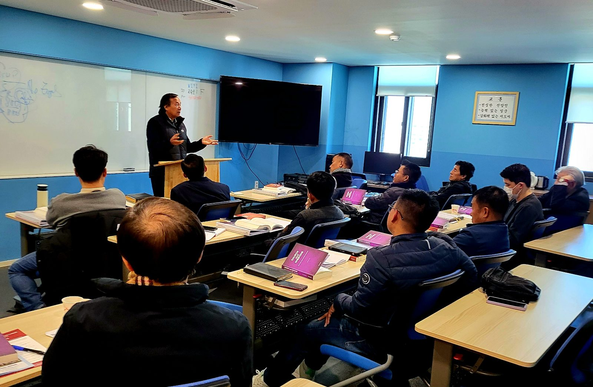

This MA course is designed to teach and train cross-cultural missionaries and evangelists with academic studies and practical ministry skills.
The course is focused on biblical studies and overseas ministry involvement, which is right for graduate students, church pastors, missionaries and retired church members who are willing to be gospel workers.

Students who have finished Course 1 and hold a bachelor's degree obtain the required credits from the professional ministry course. TGA confers the MA degree.
This D.Min course is designed to teach and train cross-cultural missionaries and evangelists with academic studies and practical ministry skills. It focuses on advanced biblical studies and overseas ministry involvement for experienced church pastors and missionaries. D.Min, D.Miss, Ed.D. and Ph.D. can be conferred.
March 8, 2024
Research on the future strategy of domestic diaspora church planting through digital mission platforms
Mental health diagnosis and spiritual social support of pastors: A focus on cases involving anxiety syndromes and panic disorders
| Date | Recipient | Degree |
|---|---|---|
| November 22, 2020 | Dr. Jun, David Chul-Han | Doctor of Divinity |
| Dr. Park, Sung-Ok | Doctor of World Mission | |
| December 6, 2020 | Dr. Cho, Joong-Eun | Doctor of Divinity |
| December 13, 2020 | Dr. Chun, Moo-Yup | Doctor of Divinity |
| September 10, 2021 | Dr. Rim, Yun-San | Doctor of Missiology |
| Dr. Lee, In-Hee | Doctor of Christian Education | |
| March 11, 2022 | Dr. Park, Sam-Yeol | Doctor of Philosophy |
| Dr. Lee, Gun-Young | Doctor of Divinity | |
| Dr. Sohn, Shin-Chul | Doctor of Divinity | |
| September 22, 2022 | Dr. Byun, In-Bok | Doctor of Divinity |
| Dr. Lee, Young-Moo | Doctor of World Mission | |
| Dr. Lee, Bae-Young | Doctor of Missiology | |
| Dr. Choi, Victoria | Doctor of World Mission | |
| March 10, 2023 | Dr. Kim, Jong-Yang | Doctor of World Mission |
| May 21, 2023 | Dr. Shin, Yong-Dae | Doctor of Divinity |
| October 13, 2023 | Dr. Park, Myung-Ha | Doctor of Missiology |
| Dr. Park, Ho-Jin | Doctor of Divinity | |
| Dr. Chun, Moo-Yup | Doctor of Philosophy | |
| Dr. Lim, Paul Jae-Sung | Doctor of Philosophy | |
| March 8, 2024 | Dr. Oh, Ki-Hyun | Doctor of Divinity |
| Dr. Jang, Deok-In | Doctor of Missiology | |
| Dr. Jun, Jin-Whee | Doctor of Missiology | |
| Dr. Yoo, Byung-Kook | Doctor of Philosophy | |
| October 18, 2024 | Dr. Jun, Young-Lee | Doctor of Missiology |
Your prayers and support for TGU ministries help us raise faithful gospel ministers with a burning heart for world evangelization.
Contact TGU